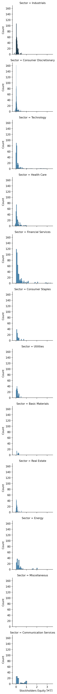
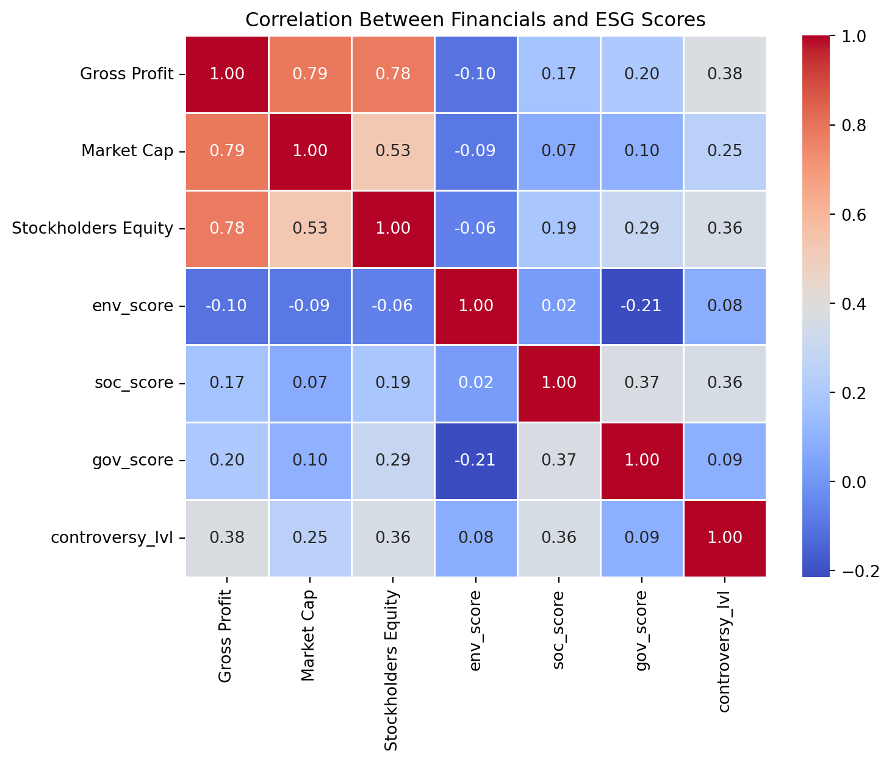

Understanding ESG Metrics and Financial Anaylis By Sector
Author
Nada Trabelsi
Published
May 16, 2024
1 Introduction
ESG metrics are performance indicators of a company’s performance on Environmental, Social, and Governance issues. The ESG risk rating measures a companies risk of mismanaging environmental, social, and governance issues. A companies Controversy Level measures the level of incidents that negatively impact stockholders, the environment, or operations. A level 5 shows the highest controversy level with incidents that have the greatest possible impact to the company.
I will be taking a deeper look and comparing companies ESG risk scores and financial analysis. Specifically focusing on the varying sectors and if there is a connection between a companies controversy level and their financials.
First, I will merge the dataframes with the variables I will be using into one single DataFrame, ‘df’.
Code
import pandas as pdimport seaborn as snsimport matplotlib.pyplot as pltesg_proj = pd.read_csv("https://bcdanl.github.io/data/esg_proj.csv")history= pd.read_csv('https://ntrabelsi109.github.io/project_files/yfinance_history.csv')inc_stmnt= pd.read_csv('https://ntrabelsi109.github.io/project_files/yfinance_income_stmt.csv')bal_sheet= pd.read_csv('https://ntrabelsi109.github.io/project_files/yfinance_balance_sheet.csv')esg_scores = pd.read_csv("https://ntrabelsi109.github.io/project_files/company_esg_scores.csv")#Create merged dataframe with variables I will be usingdf1= ( esg_proj [['Symbol', 'Company Name', 'Sector', 'Industry']] )df2= ( inc_stmnt [['date', 'company_name','Net Income', 'Total Expenses', 'Gross Profit', 'Total Revenue']] .rename(columns={'company_name': 'Symbol'}) )df3= ( bal_sheet [['date', 'company_name', 'Total Assets', 'Stockholders Equity', 'Common Stock','Net Debt']] .rename(columns={'company_name': 'Symbol'}) )df4=( esg_scores .rename(columns={'company':'Symbol'}))df= pd.merge(esg_proj,df2, on='Symbol')df=pd.merge(df, df3, on=['Symbol', 'date'])df=pd.merge(df, df4, on=['Symbol'])df.nunique()
Symbol 634
Company Name 633
Sector 12
Industry 123
Country 19
Market Cap 634
date 14
Net Income 2569
Total Expenses 2744
Gross Profit 2476
Total Revenue 2956
Total Assets 3047
Stockholders Equity 3021
Common Stock 1302
Net Debt 2611
env_score 177
soc_score 155
gov_score 108
total_score 250
controversy_lvl 5
dtype: int64
By looking at the distribution of ESG metrics, we can see that a majority of companies have a total risk score around 10-30. With the sectors with the highest risk score above 40 being Energy, and Utilities.
The average company has a controversy level of 2, with only a few companies having a controversy level above 5.Only three sectors have companies who reached a level of 5: Financial Services, Health Care, and Utilities. However, the sector who has the greatest average and median is Basic Materials and the sector with the lowest controversy level is Real Estate with at least 75% of the companies only having a controversy level of 1 and the highest controversy level being 2.
( sns.FacetGrid( data = df, row='Sector') .map(sns.histplot, 'Stockholders Equity') )

The Sector with the highest average gross profit is Communication Services, the lowest being Real Estate. When looking at stockholders equity, most sectors are concentrated around the same area with a few sectors have a wider distribution particularly Financial Services.
Text(0.5, 1.0, 'Correlation Between Financials and ESG Scores')

Market capitalization and Stockholders equity shave a strong, positive correlation with a companies gross profit. However there does not appear to be any strong correlation between a companies financials and their ESG score or controversy level. The highest correlation is the controversy level and gross profit at a weak, positive correlation of .38.
5 Diving Deeper into ESG Metrics
What is the top industry for each sector that has the highest environmental risk score?
While a company’s ESG score or controversy level might not have a strong correlation with a company’s financials, investors should still take into consideration the ESG risk scores and controversy level that might bring potential harm to the company. Considering ESG risk and controversy levels can allow investors to consider the sustainability of a certain company and will help them make more informed decisions.
6 References
“A Guide to Understanding ESG Ratings.” Yahoo! Finance, Yahoo!, finance.yahoo.com/news/guide-understanding-esg-ratings-151501443.html.
I collaborated with Jordan Alfano to create the code used for collecting data using the yfinance API and web scraping with Selenium.
ChatGPT was used to generate the lines of code that allowed the webdriver to launch and quit after pocessing every 20 companies.